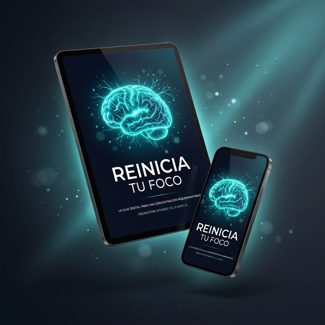

Las notificaciones, redes sociales y el exceso de información están destruyendo tu productividad sin que te des cuenta. Descubre cómo recuperar el control de tu atención en 7 días.
Las plataformas digitales están diseñadas para capturar tu atención. No es falta de disciplina — es ingeniería de la distracción.
No necesitas fuerza de voluntad sobrehumana. Solo un sistema claro que te guíe paso a paso para retomar el control de tu atención.
Identifica exactamente cuáles son tus principales fuentes de distracción y cuánto tiempo te roban diariamente. Sin datos reales, no hay cambio real.
Reduce el ruido digital gradualmente sin desconectarte del mundo. Estrategias prácticas para filtrar lo importante de lo que solo te distrae.
Implementa hábitos diarios que protegen tu concentración automáticamente. Bloques de trabajo profundo que transforman tu productividad.
Una guía práctica y directa, sin relleno. Solo herramientas que puedes aplicar hoy mismo.

Método paso a paso con explicaciones claras, sin teoría innecesaria. Todo orientado a la acción.
Actividades de 10-15 minutos diseñadas para reprogramar tus hábitos digitales de forma gradual.
Templates listos para implementar que organizan tu día alrededor de bloques de concentración profunda.
Lista paso a paso para limpiar tu entorno digital: notificaciones, apps, configuraciones y hábitos.
Métodos respaldados por la ciencia cognitiva para maximizar tu rendimiento mental durante el día.
Personas reales que aplicaron el método y transformaron su relación con la tecnología y su productividad.
"Pensé que mi problema era la falta de disciplina. La guía me mostró que era mi entorno digital. En una semana ya recuperé mis mañanas productivas."
"Antes no podía estudiar 20 minutos seguidos. Ahora hago bloques de 2 horas sin tocar el celular. Es el cambio más impactante que hice este año."
"Lo mejor es que no tuve que desconectarme de todo. Solo cambié cómo uso la tecnología. Simple, práctico y efectivo."
Todo lo que necesitas saber antes de empezar a recuperar tu concentración.
Cada día que pasa sin un sistema, son más horas perdidas en distracciones que no te aportan nada. Tu concentración te está esperando del otro lado de esta guía.